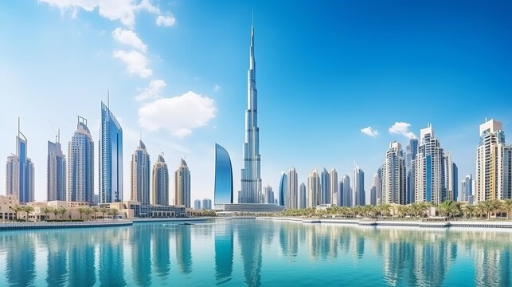

Pабочий Процесс
ИСКУССТВО И РЕМЕСЛО КАЖДОГО КАДРА

ВИДЕНЬЕ
Все начинается с видения. Я трачу время на наблюдение за светом, тенями и композицией еще до того, как подниму камеру. Каждый снимок — результат терпения.

КАРТИНКА
Использование ручных настроек дает полный творческий контроль. Я фокусируюсь на высококонтрастной черно-белой фотографии, чтобы подчеркнуть форму и текстуру.

Обработка
Цифровая проявка — это современная лаборатория. Я тщательно работаю с экспозицией и контрастом, чтобы добиться той самой глубины черно-белого кадра.

Качество
Финальный этап — передача готовой истории. Будь то цифровая галерея или печать на архивной бумаге, качество исполнения остается бескомпромиссным.
